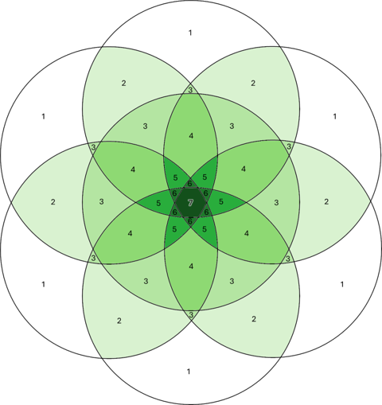
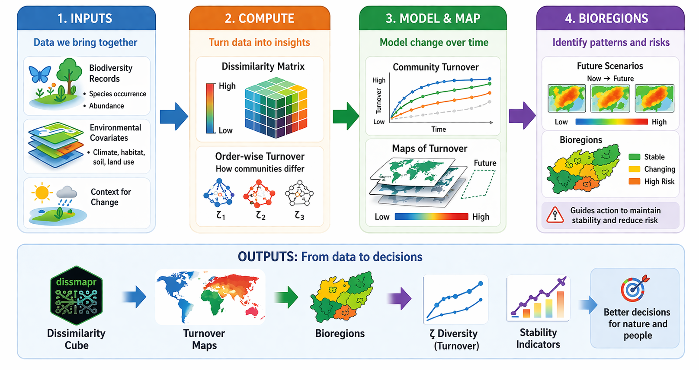
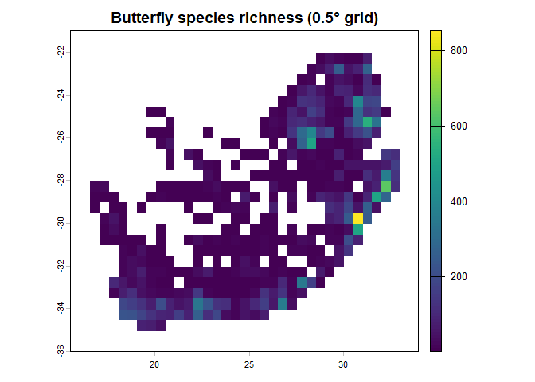
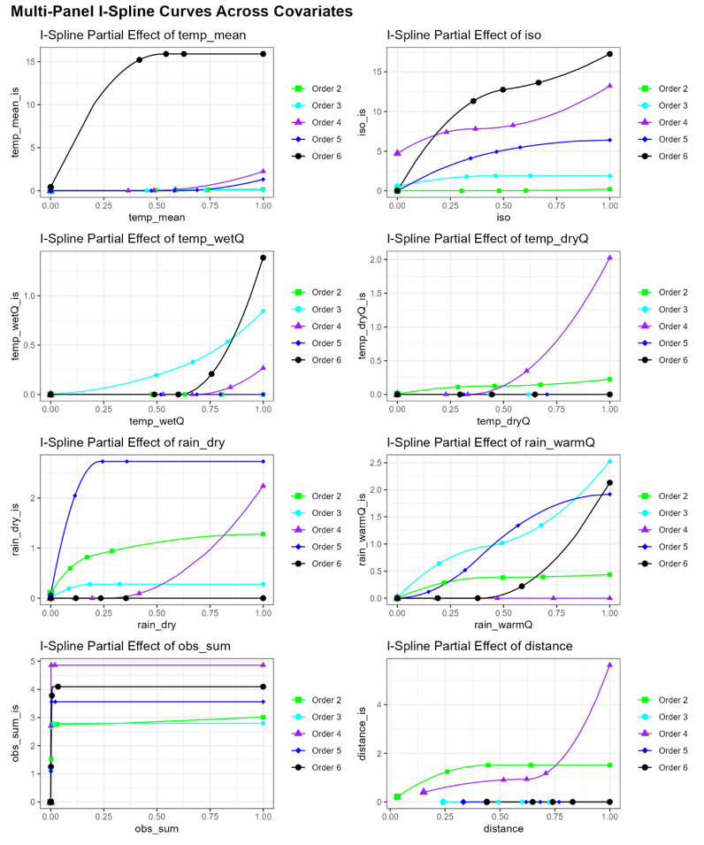
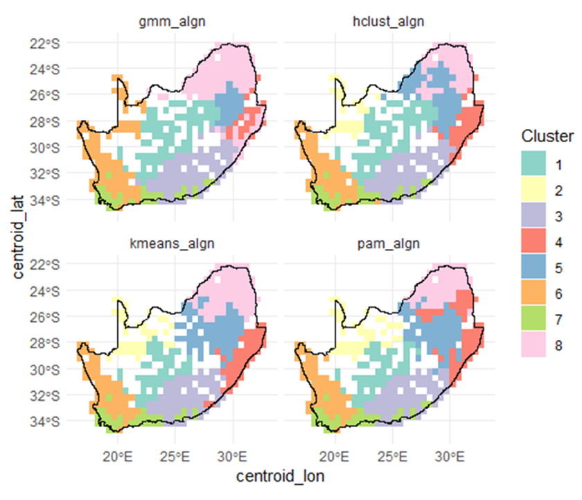
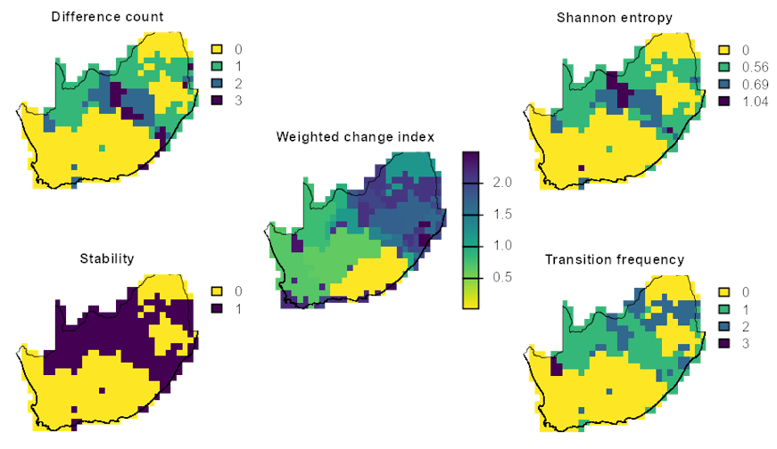

A Workflow for Compositional Dissimilarity and Biodiversity Turnover Analysis
dissmapr is an open-source R package that provides a complete, reproducible workflow for analysing how biological communities change across space and time. Rather than focusing on the predicted occurrence of individual species, it quantifies variation in assemblage composition — a community-level perspective on biodiversity change. It is designed to work with standardised species-occurrence records from biodiversity data infrastructures such as GBIF, and can be applied to any taxon, region, or time period where sufficient occurrence data are available.
The framework combines occurrence records with environmental covariates to compute multi-site compositional turnover using order-wise metrics such as zeta diversity. These dissimilarities are linked to environmental and geographic drivers through predictive models, allowing users to generate turnover surfaces, delineate bioregions, and assess how community structure may reorganise under future conditions — all fully scripted, from raw data to final mapped outputs.
The result is the Dissimilarity Cube: one of the B-Cubed family of biodiversity data products (alongside Suitability and Invasibility Cubes) that turns biodiversity records into mappable signals of community change, helping to identify stable regions, shifting assemblages, and areas at risk of ecological reorganisation.
Why community-level analysis?
Single-species models are powerful for targeted assessments, but they cannot reveal the emergent properties of assemblages — the coherence of species pools, the integrity of functional groups, or the degree to which novel community combinations are forming. Traditional beta diversity captures differences between two assemblages, yet ecological processes operate simultaneously across many sites. dissmapr formalises multi-site dissimilarity, enabling consistent quantification and modelling of compositional change across spatial and temporal scales.
This matters for policy. Frameworks such as the Kunming-Montreal Global Biodiversity Framework and the EU Biodiversity Strategy for 2030 increasingly require indicators that reflect the state and trajectory of ecosystems as a whole, not merely the status of individual species. By linking compositional turnover to environmental drivers, dissmapr also enables scenario-based assessment that informs proactive — rather than reactive — management.
Zeta diversity: beyond pairwise comparisons
Zeta diversity (ζ) generalises beta diversity by quantifying the number of species shared across i sites, extending analysis beyond pairwise comparisons. Lower orders (ζ₂, ζ₃) represent turnover among rare or localised species, whereas higher orders capture turnover in widespread, common species. The rate of zeta decline with increasing order quantifies the overall rate of compositional turnover: steep declines indicate high turnover (few species in common among sites), while shallow declines suggest more homogeneous assemblages.

Conceptual Venn diagram of zeta diversity, showing species shared across increasing numbers of sites (zeta-orders). At ζ₁ (a single site) zeta equals local species richness; at ζ₂ it counts species shared between pairs of sites; at higher orders progressively fewer species are held in common.
The dissmapr workflow
The workflow is modular and fully scripted, so each stage is transparent and repeatable. It is organised in three phases:
-
Inputs & setup — define the study region and spatial resolution, acquire species-occurrence data (e.g. from GBIF via
rgbif), assemble environmental predictor layers, and harmonise everything onto a common grid as site-by-species and site-by-environment matrices. -
From data to dissimilarity — compute order-wise zeta diversity (via the
zetadivpackage) and relate it to environmental and geographic predictors using Multi-Site Generalised Dissimilarity Modelling (MS-GDM) with monotonic i-splines. - Prediction, mapping & scenarios — predict continuous turnover surfaces, cluster them into bioregions, and propagate the fitted models to alternative (e.g. future-climate) scenarios to forecast shifting community boundaries.

Installation
Install from GitHub using:
# install.packages("remotes")
remotes::install_github("b-cubed-eu/dissmapr")A minimal, reproducible example
The example below runs end-to-end on the GBIF butterfly dataset for South Africa that ships with the package, moving from occurrence records to a gridded species-richness map. Every input is loaded with system.file(), so the example is fully self-contained and reproducible.
library(dissmapr)
# 1. Load the example occurrence dataset shipped with the package
load(system.file("extdata", "gbif_butterflies_csv.RData", package = "dissmapr"))
# 2. Import and harmonise the occurrence records
occ <- get_occurrence_data(
data = gbif_butterflies_csv,
source_type = "data_frame"
)
# 3. Reshape into long (site_obs) and wide (site_spp) tables
fmt <- format_df(
data = occ,
species_col = "verbatimScientificName",
value_col = "pa",
format = "long"
)
site_spp <- fmt$site_spp
# 4. Summarise records onto a 0.5-degree grid
grid <- generate_grid(
data = site_spp,
x_col = "x",
y_col = "y",
grid_size = 0.5,
sum_cols = 4:ncol(site_spp),
crs_epsg = 4326
)
# 5. Map gridded species richness
terra::plot(grid$grid_r[["spp_rich"]],
main = "Butterfly species richness (0.5° grid)")
The full, step-by-step tutorials — from data acquisition through MS-GDM, prediction, and bioregionalisation — are available under Articles on the package website.
From turnover to bioregions
The complete workflow turns occurrence records into interpretable, mapped products. The MS-GDM engine (run_ispline_models()) fits monotonic i-spline curves that quantify how compositional turnover responds to each environmental gradient:

I-spline partial-dependence curves from the MS-GDM. Steeper slopes mark environmental ranges where small changes drive large shifts in community composition; flat regions indicate relative compositional stability.
Predicted turnover surfaces are then clustered into data-driven bioregions (map_bioreg()) — ecologically coherent units defined by species co-occurrence rather than administrative boundaries:

Bioregional partitions of South Africa derived from butterfly assemblage turnover (ζ₂), shown for several clustering algorithms. Areas of consistent classification mark core bioregions; divergent areas mark transition zones.
Finally, map_bioregDiff() compares baseline and scenario-projected bioregions to highlight where communities are expected to reorganise under environmental change:

Areas of expected community reorganisation under alternative environmental futures — flagging priority areas for monitoring and adaptive management.
Package functions
The package consists of 10 core functions spanning the full pipeline, three ζ-MSGDM workflow helpers, and a suite of order-wise metrics.
Core functions
-
get_occurrence_data()– Import and harmonise biodiversity-occurrence data. -
generate_grid()– Generate spatial grids and gridded summaries. -
assign_mapsheet()– Add nearest mapsheet codes and centre coordinates. -
get_enviro_data()– Retrieve, crop, resample, and link environmental rasters to sites. -
format_df()– Format biodiversity records to long/wide forms for analysis. -
compute_orderwise()– Compute order-wise metrics, including zeta diversity and dissimilarities. -
rm_correlated()– Remove highly correlated predictors to avoid redundancy. -
predict_dissim()– Predict pairwise compositional turnover (zeta-dissimilarity) with richness. -
map_bioreg()– Raster-based clustering and interpolation of bioregional data. -
map_bioregDiff()– Map bioregional change metrics between categorical raster layers.
ζ-MSGDM workflow
-
run_ispline_models()– Fit multiplezetadiv::Zeta.msgdmi-spline models and return the models plus a combined i-spline table. -
plot_ispline_lines()– Plot i-spline partial effects with quantile and start-point markers. -
plot_ispline_boxplots()– Plot facetted boxplots for all i-spline basis functions.
Available metrics
Use helper_indices to choose a metric for the func argument of compute_orderwise(): richness(), turnover(), abund(), phi_coef(), cor_spear(), cor_pears(), diss_bcurt() (Bray–Curtis), orderwise_diss_gower() (Gower), mutual_info(), and geodist_helper() (Haversine geographic distance).
Applications
- Researchers – a standardised, reproducible platform for investigating the drivers and spatial patterns of community turnover; supports comparative studies across taxa, temporal change analyses, and methodological experiments.
- Conservation planners – a data-driven foundation for spatial prioritisation and network design: bioregional maps identify management units, turnover surfaces highlight transition zones, and change maps pinpoint areas of anticipated reorganisation.
- Policy – community-level indicators (rate of community change, stability of bioregional boundaries, emergence of novel assemblages) that complement species-level indicators required by the Kunming-Montreal Global Biodiversity Framework and the EU Biodiversity Strategy for 2030.
Citation
When using dissmapr, please cite the package — run citation("dissmapr") for the current entry — together with the methods it builds on:
- Hui, C. & McGeoch, M.A. (2014). Zeta diversity as a concept and metric that unifies incidence-based biodiversity patterns. The American Naturalist, 184, 684–694.
- Latombe, G., Hui, C. & McGeoch, M.A. (2017). Multi-site generalised dissimilarity modelling: using zeta diversity to differentiate drivers of turnover in rare and widespread species. Methods in Ecology and Evolution, 8, 431–442.
- McGeoch, M.A., Latombe, G., Andrew, N.R., et al. (2019). Measuring continuous compositional change using decline and decay in zeta diversity. Ecology, 100, e02832.
- Ferrier, S., Manion, G., Elith, J. & Richardson, K. (2007). Using generalised dissimilarity modelling to analyse and predict patterns of beta diversity in regional biodiversity assessment. Diversity and Distributions, 13, 252–264.
dissmapr was developed within the B-Cubed project (Biodiversity Building Blocks for policy), funded by